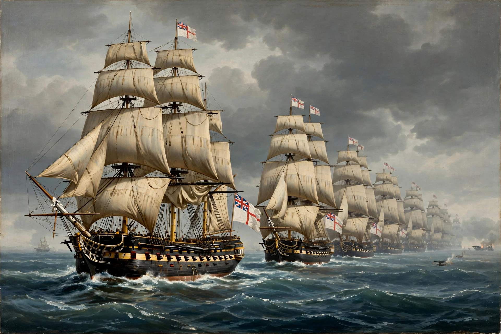

Rating system of the Royal Navy
| Royal Navy rating system | |
|---|---|
 | |
| In use | c. 1653 – mid-19th century |
| Classes | First rate through sixth rate |
| Basis | Number of carriage-mounted guns |
| Largest class | First rate: 100+ guns, e.g. HMS Victory |
The rating system of the Royal Navy classified sailing warships by the number of carriage-mounted guns they carried, from first rate (the largest ships of the line, with 100 guns or more) down to sixth rate (small frigates and post ships). Used from the mid-17th century until the end of the sailing era, the system determined a ship's role in the fleet and the pay and seniority of her officers. Vessels below the sixth rate — sloops, brigs, cutters and gunboats — were "unrated".
The rates
| Rate | Guns (typical, c. 1800) | Role |
|---|---|---|
| First rate | 100–120 | Ship of the line, usually a fleet flagship |
| Second rate | 84–98 | Ship of the line |
| Third rate | 64–80 | Ship of the line; the 74-gun ship was the backbone of the fleet |
| Fourth rate | 50–60 | Two-decker; by 1800 too weak for the line, used on foreign stations |
| Fifth rate | 32–44 | Frigate |
| Sixth rate | 20–28 | Small frigate / post ship |
Ships of the line and frigates
First, second and third rates were three- and two-decked ships of the line, built to fight in the line of battle. First rates such as HMS Victory, Nelson's flagship at Trafalgar, carried over 100 guns on three decks and crews of 800 or more. Fourth rates faded from the battle line during the 18th century. Fifth and sixth rates were frigates and post ships — fast, single-gundeck vessels used for scouting, convoy escort and commerce raiding, commanded by post-captains.
Administration
The rating also fixed establishment: the size of a ship's company, and the number of lieutenants, warrant officers and marines she carried, followed her rate. The system was periodically revised (notably in 1716, 1747 and 1817, when carronades were counted in the rating) and lost meaning with the coming of steam, shell guns and iron construction in the mid-19th century.